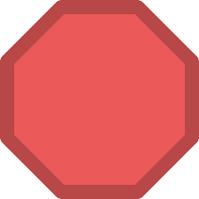
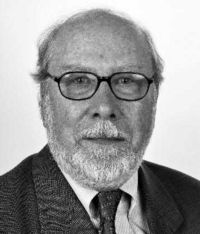
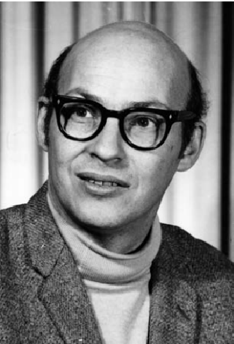
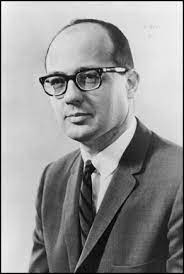

Sobre
Guess the Genius faz parte de
um projeto de programção da disciplina
Laboratório de Introdução a Computação da PUC Minas. O objetivo do projeto é criar um jogo
multiplayer
na plataforma Scratch e
integrá-lo com ganhadores dos prêmios Nobel e Turing visando divulgar o trabalho dessas pessoas
de forma
dinâmica.
Criadores
Laura Iara Silva Santos Xavier
Programadora - Aluna de Ciência da Computação Puc Minas
Programadora - Aluna de Ciência da Computação Puc Minas
Priscila Goulart Carvalho
Programadora - Aluna de Ciência da Computação Puc Minas
Programadora - Aluna de Ciência da Computação Puc Minas
Vinícius Gadanha da Cruz
Programador - Aluno de Ciência da Computação Puc Minas
Programador - Aluno de Ciência da Computação Puc Minas
José Fernando Rossi Júnior
Programador - Aluno de Ciência da Computação Puc Minas
Programador - Aluno de Ciência da Computação Puc Minas
Guess the Genius
Acesse o jogo também em:
Como Jogar
Bem vindo ao Guess the Genius, para jogar é extremamente simples:
Acesse o jogo por aqui ou em Guess the Genius. Clique em (parte superior esquerda ou meio da tela) e logo após, no botão Start. Feito isso, insira seu nome e selecione duas cartas. Caso não sejam correspondentes, memorize-as e selecione outro par de cartas na tentativa de identificar uma carta correspondete à outra. Quando encontrar todos os pares, aperte o botão Menu e, em sequência, o botão Rank para visualizar o rank de melhores jogadores. Caso queira sair da partida, simplismente aperte o botão Sair do jogo ou clique em
Acesse o jogo por aqui ou em Guess the Genius. Clique em (parte superior esquerda ou meio da tela) e logo após, no botão Start. Feito isso, insira seu nome e selecione duas cartas. Caso não sejam correspondentes, memorize-as e selecione outro par de cartas na tentativa de identificar uma carta correspondete à outra. Quando encontrar todos os pares, aperte o botão Menu e, em sequência, o botão Rank para visualizar o rank de melhores jogadores. Caso queira sair da partida, simplismente aperte o botão Sair do jogo ou clique em

(canto superior esquerdo).
Sobre os Genios


Marie Curie
Marie Skłodowska-Curie, nascida Maria Salomea Skłodowska (Varsóvia, 7
de novembro de 1867 — Passy, 4 de julho de 1934), foi uma física e
química polonesa naturalizada francesa, que conduziu pesquisas pioneiras
sobre radioatividade. Ela foi a primeira mulher a ganhar o Prêmio Nobel,
sendo também a primeira pessoa e a única mulher a ganhá-lo duas vezes,
além de ser a única pessoa a ser premiada em dois campos científicos
diferentes.

Niklaus Wirth
Niklaus Emil Wirth (Winterthur, 15 de fevereiro de 1934) é um
professor e cientista da computação suíço. Ele projetou várias
linguagens de programação, incluindo Pascal, e foi pioneiro em vários
outros tópicos classicos em engenharia de software.Em 1984, ele ganhou o
Prêmio de Turing, geralmente reconhecido como a maior distinção em
ciência da computação, por desenvolver uma sequência de linguagens de
computador inovadoras.
Criador das linguagens de programação Pascal,[2] Modula-2[3] e
Oberon.

Marvin Minsky
Marvin Lee Minsky (Nova Iorque, 9 de agosto de 1927 – Boston, 24 de
janeiro de 2016) foi um cientista cognitivo norte-americano.
Sua principal área de atuação foi centrada nos estudos cognitivos no
campo da inteligência artificial. Minski foi co-fundador do Laboratório
de Inteligência Artificial do Instituto de Tecnologia de Massachusetts
(MIT) e autor de diversos artigos e livros sobre o tema e suas
implicações filosóficas.

Charles Bachman
Charles Willian Bachman (Manhattan, 11 de dezembro de 1924 –
Lexington, 13 de julho de 2017[1]) foi um informático estadunidense e
passou toda a sua carreira praticando engenharia de software.
Especialista em banco de dados, recebeu o Prêmio Turing de 1973, por
"sua contribuição fundamental à tecnologia de banco de dados".
Alan Perlis
Alan Jay Perlis (Pittsburgh, 1 de abril de 1922 — New Haven, 7 de
fevereiro de 1990) foi um cientista da computação estadunidense.
Foi o primeiro laureado com o Prêmio Turing, em 1966, concedido pela sua
influência na área de técnicas de programação avançada e construção de
compiladores. Uma referência ao seu trabalho como membro da equipe que
desenvolveu a linguagem de programação ALGOL.
Em 1943 recebeu seu diploma de graduação em química pelo Carnegie
Institute of Technology (atual Carnegie Mellon University).
Trailers
Copyright 2021
Disciplina Laboratório de Introdução a Programação
Ciência da Computação PUC Minas
Disciplina Laboratório de Introdução a Programação
Ciência da Computação PUC Minas